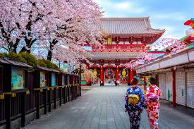
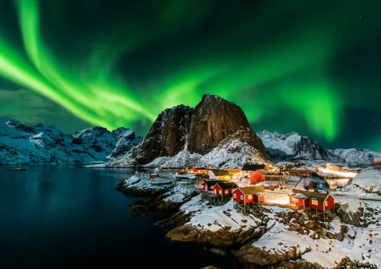
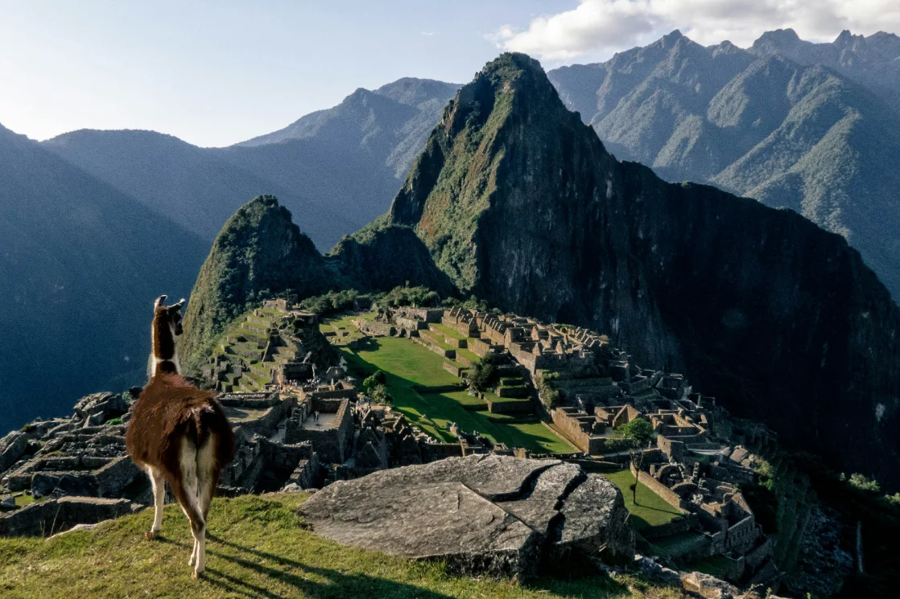

Japón

Japón combina tecnología moderna y tradiciones antiguas, Japón es un país montañoso, con dos tercios de su territorio cubiertos de bosques. La mayoría de las zonas tienen clima templado con cuatro estaciones marcadas, aunque Okinawa, al sur, es subtropical y Hokkaido, al norte, es subártico. Por consiguiente, en Japón existe una gran diversidad de fauna y flora.
Noruega

Noruega tiene paisajes espectaculares y fiordos impresionantes, Noruega ofrece mil y una cosas que ver y hacer: vibrantes zonas urbanas, hermosos fiordos, la aurora boreal o remotas aldeas al norte del Círculo polar ártico.
Perú

Perú alberga Machu Picchu y una rica cultura inca, Presenta una variedad de paisajes, desde montañas y playas hasta desiertos y selvas tropicales.